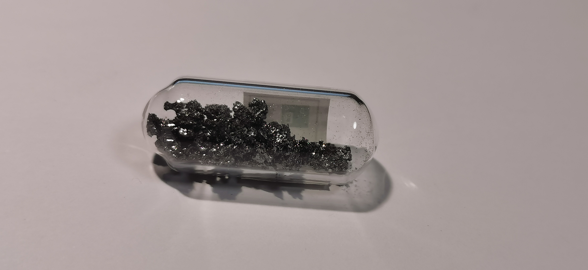
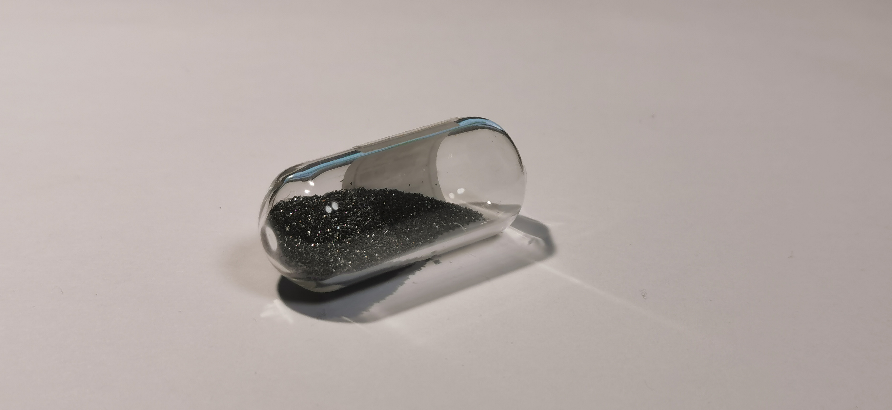

硼
2019.5 结晶硼块 99.99% 来自冥灵 
结晶硼：硼常见两种同素异形体，无定形硼和晶体硼，无定形硼是深棕色的粉末，晶体硼是纯正的黑色。学习过元素化学的朋友，您一定不对α-菱形硼晶体的B₁₂正十二面体结构陌生。晶体硼焓较低，是两种中最稳定的；因此高温反应（如置换氧化硼）常常得到无定形硼，无定形硼的反应活性比晶体硼好。
2019.5 结晶硼粉 99.0% 来自冥灵 
硼粉：此硼粉并非无定形硼，您可以看到这管硼样品同样是纯正的黑色。硼粉的获得归结于硼的硬度，单质中硼的硬度仅次于金刚石，碾压其他金属与非金属。因此晶体硼在磕碰中容易形成粉末，实际上说是粉不如说是极小的碎块。